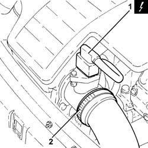
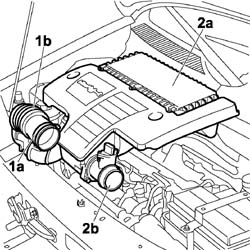
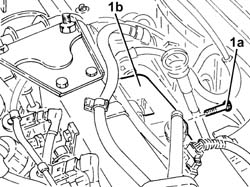
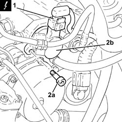
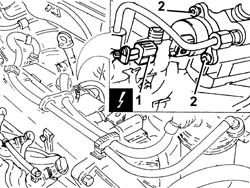
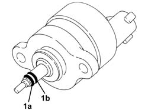
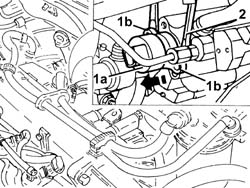
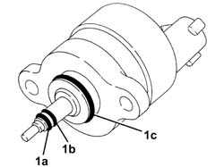

1060E50 Fuel pressure REGULATOR - R.R.
- Path
- Procedures > 10 ENGINE > 1060 DIESEL FUEL INJECTION > 1060E diesel pressure pump > 1060E50 Fuel pressure REGULATOR - R.R.
- Kind
- repair procedure (removal / refitting; the operation number is the code)
- Applies to
- all engines; all production periods
- Interactive page
- https://sloeber94.github.io/elrnDB-fDbl/en/#/2584403
Applies to: all engines; all production periods
 Removing
Removing
 Refitting
RefittingEnsure that the ignition key is in the OFF position, then disconnect the negative battery terminal.
 | Name | Connector |
|---|---|---|
- | Battery | A1 |
1. Disconnect the electrical connection from the air flow meter.
| Name | Connector |
|---|---|---|
1 | Air flow meter | K41 |
2. Loosen the band and disconnect the the turbocharger air inlet sleeve from the rigid pipe, air flow meter side.

Applies to: all engines; all production periods
Applies to: all engines; all production periods
1. Loosen the band (1a) and disconnect the flexible hose (1b) from the air intake.
2. Remove the air filter (2a) complete with air flow meter (2b) by releasing from the underlying pins and then from the rear fastening.

Applies to: all engines; all production periods
Removing
RefittingPosition the vehicle on the ramp.
Ensure that the ignition key is in the stop OFF, then disconnect the battery negative terminal.
| Name | Connector |
|---|---|---|
- | Battery | A1B |
Proceed with the removal 7055B54 under-engine guard - r r .
1. Undo the bolts (1a) and move aside the fuel return manifold pipe (1b) without disconnecting the pipes.

Applies to: all engines; all production periods
1. Disconnect the electrical connection from the fuel pressure regulator.
| Name | Connector |
|---|---|---|
1 | Fuel pressure regulator | N77 |
Position something suitable under the regulator to collect any components which could drop during the stages which follow.
2. Undo the bolts (2a) securing the fuel pressure regulator (2b) to the single fuel manifold pipe.
Grip the outer casing of the regulator, partly extract it and, at the same time, turn it so that the fins in which the openings for the fixing bolts are located are positioned horizontally, then insert the blades of two screwdrivers by the fins and very carefully extract the pressure regulator.
Remove the gasket between pressure regulator and single fuel manifold pipe.

Applies to: all engines; all production periods
Position a suitable container beneath the regulator to collect any components which could drop during the stages which follow.
1. Disconnect the electrical connection from the fuel pressure regulator.
| Name | Connector |
|---|---|---|
1 | Fuel pressure regulator | N77 |
2. Undo the bolts fixing the pressure regulator to the pump without removing.

Applies to: all engines; all production periods
1. After removing the regulator, check that the high-pressure seal (1a) (black or green) and anti-extrusion sealing ring (1b) (white) are present.

Applies to: all engines; all production periods
1. Grasp the outer case of regulator (1a), remove partly and turn simultaneously to position tabs (1b) containing holes for retaining bolts horizontally.
2. Insert the blades of two screwdrivers by the fins (1a - Fig. 9) and, working very carefully simultaneously with the two screwdrivers, extract through pressure regulator using an axial movement.

Applies to: all engines; all production periods
Refitting
RemovingSuction off any impurities in the single fuel manifold pipe.
Before fitting, check the condition of the two sealing rings and make sure they are correctly positioned.
Lubricate the outer surface of the two seals for the pressure regulator using Vaseline.
Fit a new gasket between pressure regulator and single fuel manifold pipe.
Fit the pressure regulator in its seating, pressing gently and at the same time rotating the regulator until it is in contact with the surface of the single fuel manifold pipe.
Tighten to the specified torque the bolts securing the fuel pressure regulator to the single fuel manifold pipe.
Connect the electrical connection to the fuel pressure regulator.
Refit the air filter complete with air flow meter, engaging it in the rear attachment and then in the underlying pins.
Connect the flexible hose to the air intake on the crossmember and tighten the fixing band.
Connect the air intake sleeve to the turbocharger, air flow meter side, and tighten the band.
Connect the electrical connection to the air flow meter.
| Name | Connector |
|---|---|---|
- | Air flow meter | K41 |
Connect the battery negative terminal.
Ensure that the ignition key is in position - Connect the negative battery terminal.
| Name | Connector |
|---|---|---|
- | Battery | A1 |
Applies to: all engines; all production periods
1. After having removed the regulator, check that the high pressure seal (black or green), the anti-extrusion seal (1b) (white) and the low pressure seal (1c) (black) are present.

Applies to: all engines; all production periods
Refitting
RemovingSuction off any impurities inside the pump casing.
Before fitting, check the condition of the three seals and the new regulator and make sure they are correctly positioned.
Lubricate the outer surface of the three seals using vaseline.
Fit the pressure regulator in its housing on the pump, pressing gently and, at the same time, rotating the regulator until it is in contact with the surface of the pump.
Tighten the pressure regulator retaining bolts.
Connect the electrical connection to the fuel pressure regulator.
Place the fuel return manifold pipe back in its housing and secure it using the bolts.
Proceed with the refitting 7055B54 under-engine guard - r r .
Connect the battery terminal (-).
Remove the car from the ramp.